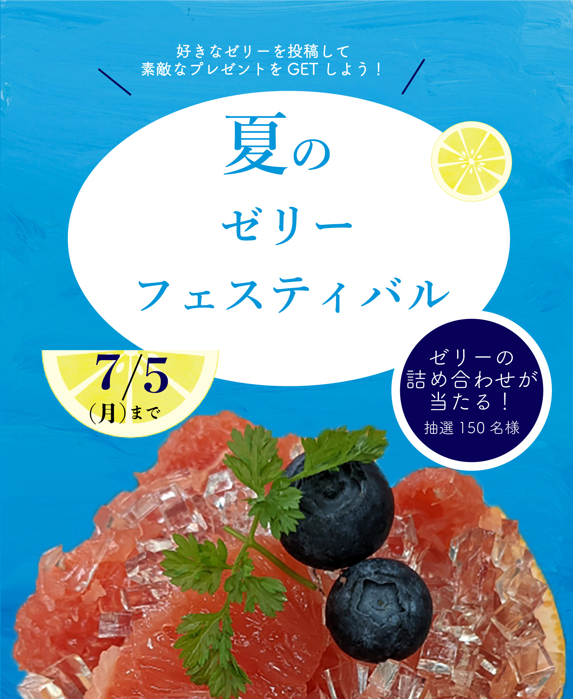
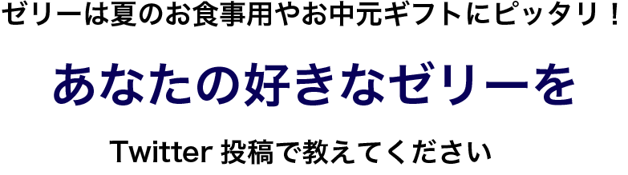
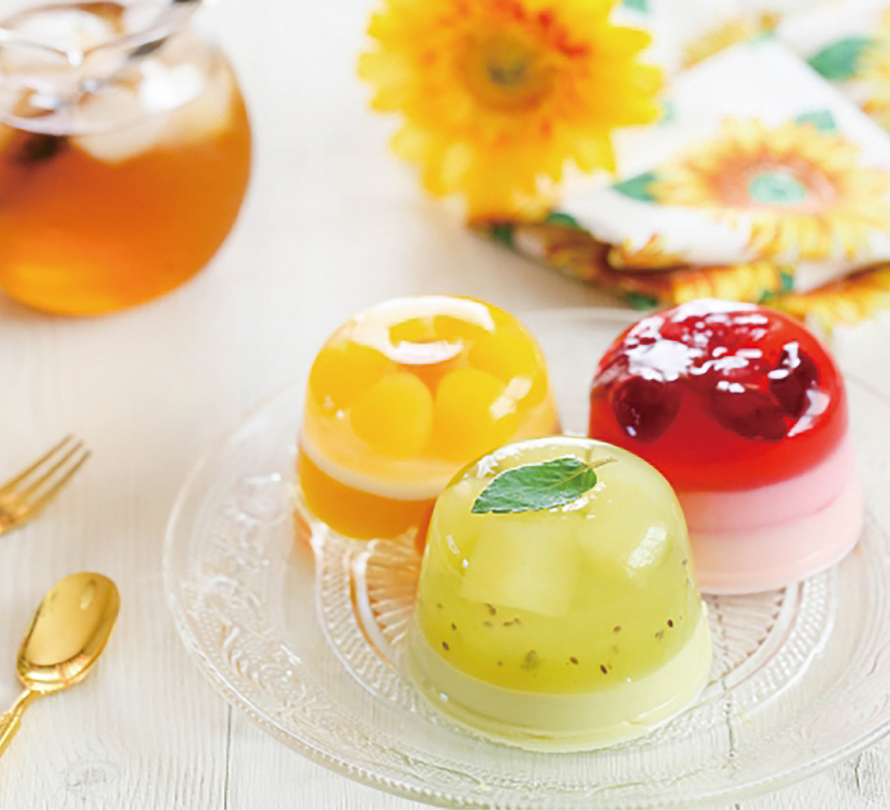

応募内容
- キャンペーン期間中に、日本ゼリー協会Twitter公式アカウント「＠---------」をフォロー
- ハッシュタグ「＃夏ゼリーフェスティバル」とあなたの好きなゼリーを投稿して応募完了
- 抽選で100名様にお中元ギフトをプレゼント！
応募締切
2022年7月5日23時59分まで
応募方法
抽選で100名様に、タルト詰め合わせが当たります。抽選で150名様に、ゼリーの詰め合わせ が当たります。当選者には後日Twitter のDMにてお知らせいたします。
（フォローが外れている方は、抽選の対象 外にとなります。
賞品発送予定日
2022年7月12日〜順次発送
賞品
日本ゼリー協会協賛企業から、おすすめゼリー3種詰め合わせをお送りいたします。（宅急便でのお届けです）
※ゼリーの種類はご指定できません。
※写真はイメージです。

応募規約
投稿いただく前に、本規約をよくお読みいただき、同意のうえ、投稿ください。
投稿された場合、本格的にご同意されたものとみなします。
プレゼント当選のご連絡はTwitterのDMにて詳細をご連絡いたします。